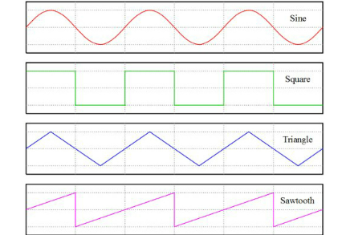

シンセサイザとは、色々な音を組み合わせて、自分好みのオリジナル音を作り出すことのできる電子楽器のこと
オシレーター、フィルター、ADSRエンベロープ、ノイズ、モジュレーション…色々な機能が組み合わさって構成されている。本ツールは、この中でも特に重要な機能である、「オシレーター」、「フィルター」、「ADSRエンベロープ」について、体験ツールを通して、直感的に音作りができるように導くことが目的である
まず、オシレーターについてです。 オシレーターというのは、音の基本となる波を生成する部分のことを言います。 その波には、四つの種類があります。
① サイン波（正弦波） ② 三角波 ③ ノコギリ波 ④ 矩形波
それぞれ波形に特徴があります。
| 項目 | 値 |
|---|---|
| サイン波 | 柔らかく、優しい音。ベースや、深みを出すのに有効。 |
| 三角波 | 正弦波に近いが少し明るい音 |
| ノコギリ波 | 最も明るく、存在感のある音。いかにもシンセサイザの音 |
| 矩形波 | パルス的で、はっきりした音。ゲーム音などに有効。 |
オシレーターの体験ツールでは、それぞれの波の音の違いや、組み合わせでどのような音になるのか体験してみよう。
オシレーター体験へ